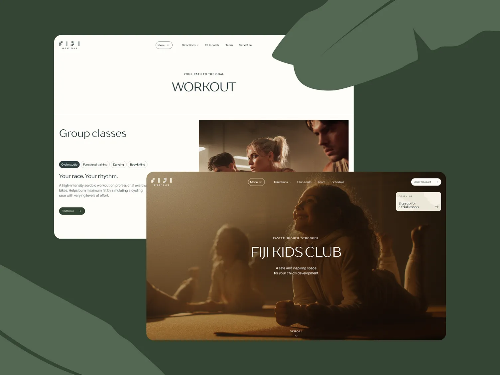
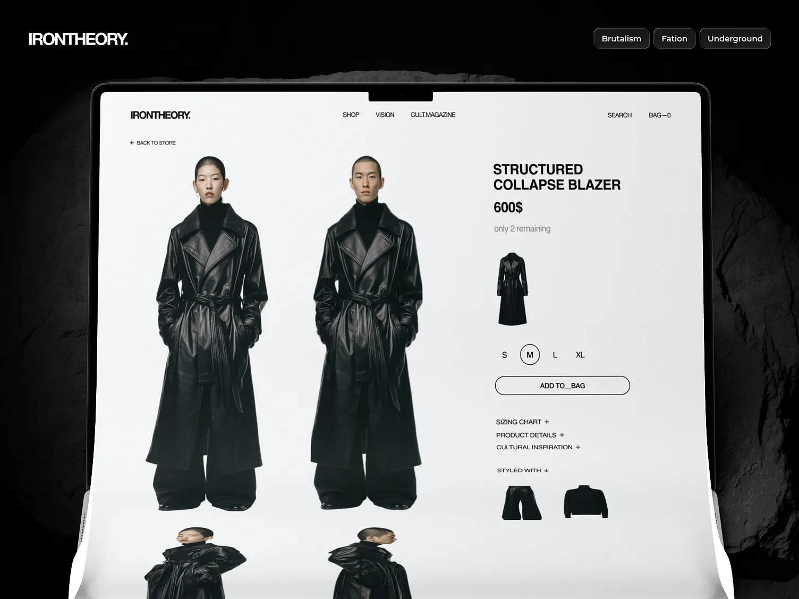

Вместо сложной анимации здесь работает композиция: крупный заголовок, точные акценты и уверенный ритм секций.
О проекте
Главная страница как точка доверия
На этой странице важно было показать не только картинку, но и сам принцип подачи. Пользователь должен быстро считать уровень проекта, понять характер бренда и увидеть, что следующий шаг уже подготовлен. Поэтому кейс собран вокруг первого впечатления, а не вокруг нагромождения приёмов.
Превью первого экрана показано крупно и честно, чтобы кейс сразу воспринимался как реальный живой проект, а не как абстрактная карточка.
В результате кейс не спорит с брендом, а усиливает его: дорого, спокойно и без лишней графической суеты.
Разбор
Почему такой формат работает
Для премиального кейса важно не раздувать количество блоков, а удержать тон. Поэтому страница строится на знакомой системе главной: тёмный первый экран, большие заголовки, светлая информационная часть и минималистичные карточки без лишних обводок.
На десктопе превью ощущается как часть витрины. На планшете и телефоне структура складывается в один аккуратный поток: сначала идея, потом факты, затем разбор и дополнительные экраны проекта.

